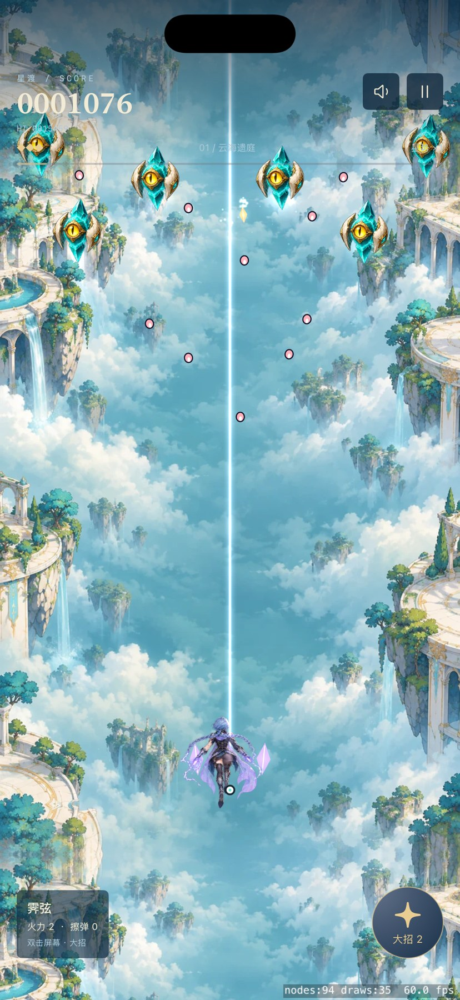
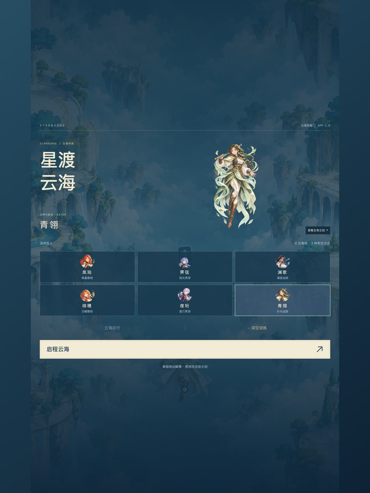

卡顿对照
相同 Release 模拟器、随机种子 42 与初始站位，排除前两秒预热。开声音与关声音的对照将问题缩小到音效事件处理；修复后改用预解码 PCM 缓冲和后台音频队列。
以上为模拟器测量。实机 GPU、温度、能耗及长时间运行仍需单独验证，不能据此承诺每台 iPhone 固定帧率。
自动化覆盖
- 89 项共享规则测试通过，包含六角色 × 两难度的核心一致性验证。
- 3 项诊断工具测试通过，覆盖空数据不得误判成功、预算回归和调用栈引用解析。
- IPHONE：7 项通过，0 项失败
- IPAD：7 项通过，0 项失败
- UI 流程：六角色选择、困难模式、三档全身立绘、单指移动、双击大招、暂停恢复、切后台暂停及连续重开。
- laser-audio：帧间隔 P95 16.67 ms，预算检查通过
- homing-hard-audio：帧间隔 P95 16.67 ms，预算检查通过
实际运行截图

Release 模拟器实际战斗，底部显示帧率、节点和绘制计数。
iPad 自动化选人流程截图。自动化打开的满血全身立绘。同一角色的濒危战损立绘。可重复执行
npm run test:native
npm run test:native -- --trace
项目已保留测试入口、性能预算、调用栈解析器、回归基线和调试说明。命令输出 XCTest 结果包、截图附件、Release 逐帧数据及 JSON 汇总；任何必需检查失败都会返回非零退出码。
脚本包用于现有星渡源码项目，不含完整引擎资源或签名文件。网页试玩仍为原来的浏览器版本；本页展示的是原生版本的验收结果。TestFlight 尚未开放本次修复版。